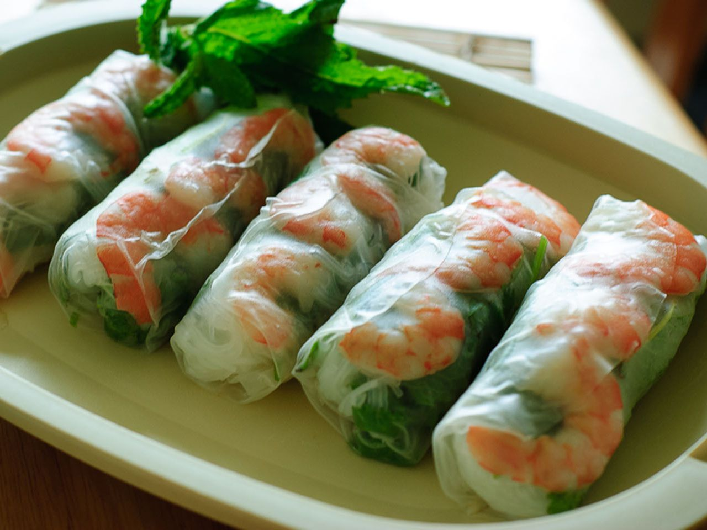

Vietnamese Fresh Spring Rolls

Description
Made with shrimp, pork belly, and a variety of vegetables, this traditional recipe for fresh Vietnamese spring
rolls or
goi cuon is a healthy dinner that comes together in a little over an hour and requires very little cooking. It is a dish
that I could eat over and over again!
Vietnamese spring rolls or goi cuon are a healthy, refreshing dish that is perfect for summer. Traditionally,
Vietnamese spring rolls are made with fresh veggies, shrimp and pork belly (optional) all wrapped in rice paper.
However, you can put almost anything in your spring rolls. I’ve had it with pork, tofu, and even just vegetables.
The best part about this dish is you can make it your own by changing the fillings you use. Some variations include
nem nuong spring rolls, salmon spring rolls, and bo bia which is made with Chinese sausage! It is also a cold dish,
so it’s perfect for hot summer days!
Ingredients
- 2 ounces rice vermicelli
- 8 rice wrappers (8.5 inch diameter)
- 8 large cooked shrimp - peeled, deveined and cut in half
- 2 leaves lettuce, chopped
- 3 tablespoons chopped fresh mint leaves
- 3 tablespoons chopped fresh cilantro
- 1 ⅓ tablespoons chopped fresh Thai basil
Steps
- Fill a large pot with lightly salted water and bring to a rolling boil; stir in vermicelli pasta and return to a
boil. Cook pasta uncovered, stirring occasionally, until the pasta is tender yet firm to the bite, 3 to 5
minutes.
- Fill a large bowl with warm water. Dip one wrapper into the hot water for 1 second to soften. Lay wrapper flat;
place 2 shrimp halves in a row across the center, add some vermicelli, lettuce, mint, cilantro, and basil,
leaving about 2 inches uncovered on each side. Fold uncovered sides inward, then tightly roll the wrapper,
beginning at the end with lettuce. Repeat with remaining ingredients.
- For the sauces: Mix water, lime juice, sugar, fish sauce, garlic, and chili sauce in a small bowl until well
combined. Mix hoisin sauce and peanuts in a separate small bowl.
- Serve rolled spring rolls with fish sauce and hoisin sauce mixtures.
Return to main page